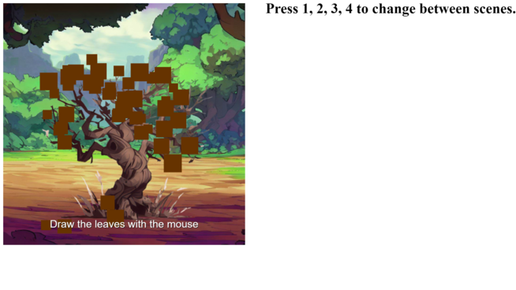
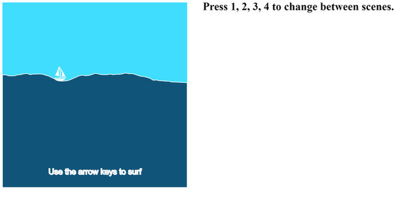

In Class Projects
Perlin Noise
This project, utilizes the p5.js library, generates a captivating animation of a particle system.
It initializes a canvas and populates it with a specified number of particles, each having a distinct position and color.
These particles move organically using Perlin noise, resulting in fluid, mesmerizing motions.
Drawing a Tree
In this project I used the p5.js library for creative coding and graphical animations.
In this particular scene, it sets the background to an image, updates and displays a collection of square objects.
The user draws on the tree and it depicts the tree in a all four season atmosphere.

Controlling a Boat
In this project I created an animated ocean wave effect with a boat that can be controlled using arrow keys.
The background is set to a light blue color, simulating the sea.
It then generates a wavy shape using Perlin noise to create the appearance of ocean waves.
